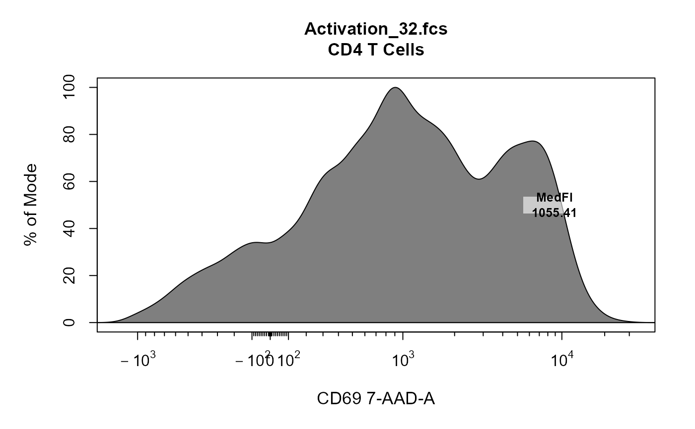

Interactively label existing plots with boxed labels containing text and
statistics. cyto_plot_label can only label the last plot and can only
add labels on a per sample basis (i.e. single layer only). Locations for each
label must be manually selected. More complex labelling can be acheived
directly through cyto_plot.
# S3 method for GatingHierarchy cyto_plot_label( x, parent, alias = NA, channels = NULL, display = 1, gate = NA, negate = NA, label_text, label_stat, label_text_x = NA, label_text_y = NA, label_text_font = 2, label_text_size = 0.8, label_text_col = "black", label_fill = "white", label_fill_alpha = 0.6, density_smooth = 0.6, ... ) # S3 method for flowFrame cyto_plot_label( x, channels = NULL, trans = NA, display = 1, gate = NA, negate = FALSE, label_text = NA, label_stat = NA, label_text_x = NA, label_text_y = NA, label_text_font = 2, label_text_size = 0.8, label_text_col = "black", label_fill = "white", label_fill_alpha = 0.6, density_smooth = 0.6, ... )
| x | object of class |
|---|---|
| parent | name of the parent population to extract when a
|
| alias | name of teh gated populations to label when a GatingHierarchy
object is supplied. This is equivalent to the |
| channels | a vector indicating the fluorescent channel(s) to be used for gating. |
| display | numeric [0,1] to control the percentage of events to be
plotted. Specifying a value for |
| gate | object of class
|
| negate | logical indicating whether a label should be included for the neagted population (i.e. events outside the gate). Set to FALSE by default to only calculate statistics for events within the gate. |
| label_text | character string to include in the label above the statistic (e.g. population name(s)). |
| label_stat | indicates the type of statistic to include in the label,
can be either code"count", |
| label_text_x | vector containing the x co-ordinates for the plot labels. Label positions can be interactively selected if no co-ordinates are manually supplied. |
| label_text_y | vector containing the x co-ordinates for the plot labels. Label positions can be interactively selected if no co-ordinates are manually supplied. |
| label_text_font | integer [1,2,3,4] passed to |
| label_text_size | numeric character expansion used to control the size
of the text in the labels, set to |
| label_text_col | specify text colour in label for each gate, defaults to
|
| label_fill | fill colour to use for labels, set to "white" by default. |
| label_fill_alpha | numeric [0,1] controls the transparency of the fill
colour, set to |
| density_smooth | smoothing parameter passed to
|
| ... | not in use. |
| trans | object of class |
add a boxed text label to an existing cyto_plot.
Dillon Hammill (Dillon.Hammill@anu.edu.au)
library(CytoExploreRData) # Load in samples fs <- Activation gs <- GatingSet(fs) # Apply compensation gs <- compensate(gs, fs[[1]]@description$SPILL) # Transform fluorescent channels trans <- estimateLogicle(gs[[4]], cyto_fluor_channels(fs)) gs <- transform(gs, trans) # Gate using gate_draw gt_gating(Activation_gatingTemplate, gs)#>#>#>#>#>#>#>#>#>#>#>#>#>#>#>#>#>#>#>#>#>#>#>#>#>#>#>#>#>#>#>#>#>#>#>#>#>#>#>#># Label - median fluorescent intensity cyto_plot_label(cyto_extract(gs, "CD4 T Cells")[[32]], channels = "CD69", label_stat = "median", label_text = "MedFI", trans = trans, label_text_x = 3, label_text_y = 50 )